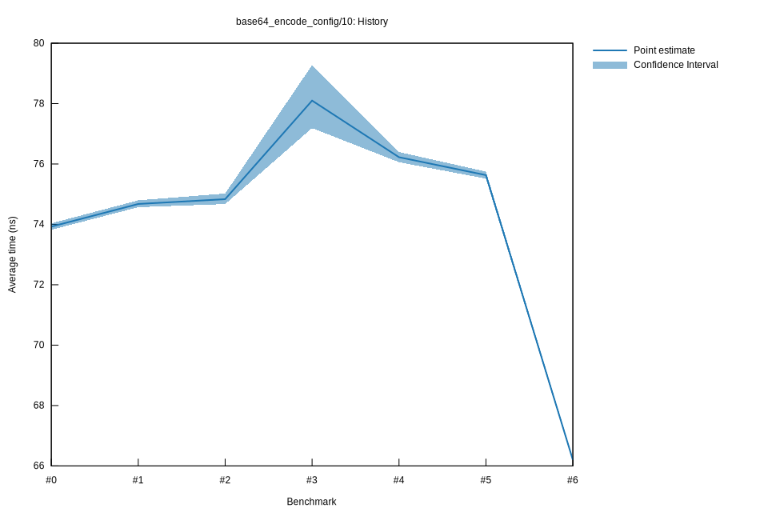

# 62022-10-16T19:52:02+03:00
|
Lower Bound |
Estimate |
Upper Bound |
| Value: |
66.14ns |
66.20ns |
66.27ns |
| Throughput: |
173.03MiB/s |
172.88MiB/s |
172.69MiB/s |
| Change in Value: |
-13.137% |
-12.647% |
-12.303% |
| Change in Throughput: |
+15.124% |
+14.478% |
+14.029% |
No change in performance detected.
# 52022-10-16T17:13:59+03:00
|
Lower Bound |
Estimate |
Upper Bound |
| Value: |
75.51ns |
75.63ns |
75.75ns |
| Throughput: |
151.55MiB/s |
151.32MiB/s |
151.08MiB/s |
| Change in Value: |
-0.8880% |
-0.4187% |
+0.1816% |
| Change in Throughput: |
+0.8960% |
+0.4205% |
-0.1813% |
Change within noise threshold.
# 42022-10-15T17:08:43+03:00
|
Lower Bound |
Estimate |
Upper Bound |
| Value: |
76.06ns |
76.22ns |
76.40ns |
| Throughput: |
150.46MiB/s |
150.14MiB/s |
149.80MiB/s |
| Change in Value: |
-4.5126% |
-2.8521% |
-1.4311% |
| Change in Throughput: |
+4.7259% |
+2.9358% |
+1.4518% |
No change in performance detected.
# 32022-10-15T17:05:09+03:00
|
Lower Bound |
Estimate |
Upper Bound |
| Value: |
77.19ns |
78.10ns |
79.28ns |
| Throughput: |
148.26MiB/s |
146.53MiB/s |
144.36MiB/s |
| Change in Value: |
+3.1763% |
+4.7340% |
+6.4370% |
| Change in Throughput: |
-3.0785% |
-4.5200% |
-6.0477% |
No change in performance detected.
# 22022-10-15T16:44:20+03:00
|
Lower Bound |
Estimate |
Upper Bound |
| Value: |
74.67ns |
74.83ns |
75.02ns |
| Throughput: |
153.26MiB/s |
152.92MiB/s |
152.54MiB/s |
| Change in Value: |
-0.1521% |
+0.1338% |
+0.4322% |
| Change in Throughput: |
+0.1523% |
-0.1336% |
-0.4303% |
Change within noise threshold.
# 12022-10-08T17:22:27+03:00
|
Lower Bound |
Estimate |
Upper Bound |
| Value: |
74.57ns |
74.68ns |
74.80ns |
| Throughput: |
153.47MiB/s |
153.25MiB/s |
153.00MiB/s |
| Change in Value: |
+0.8634% |
+1.1242% |
+1.3668% |
| Change in Throughput: |
-0.8560% |
-1.1117% |
-1.3484% |
No change in performance detected.
# 02022-10-08T17:03:42+03:00
|
Lower Bound |
Estimate |
Upper Bound |
| Value: |
73.82ns |
73.93ns |
74.04ns |
| Throughput: |
155.03MiB/s |
154.80MiB/s |
154.58MiB/s |